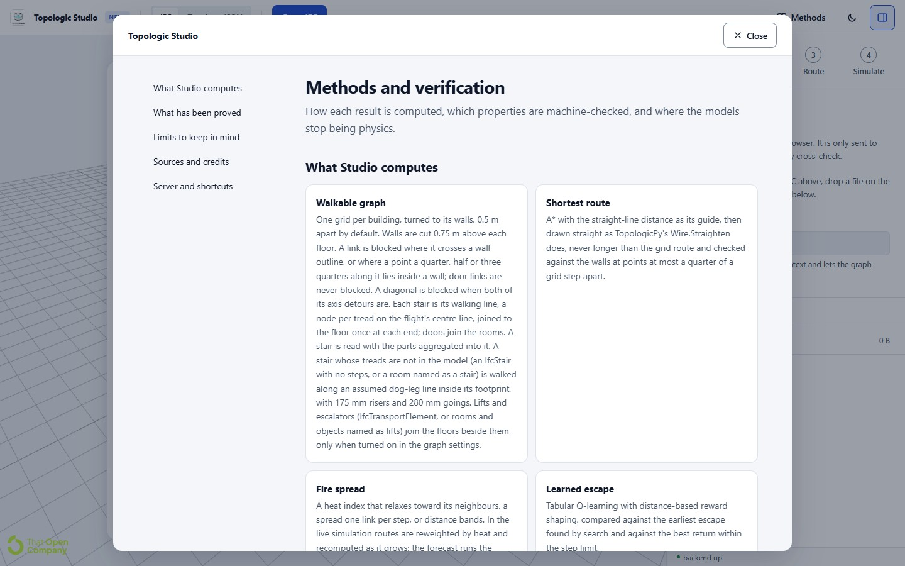

Methods, proofs and sources
How Studio computes its results, how they are checked, where they stop, and whose work they build on. The app's own Methods page, opened from its header, gives the same account with the equations rendered.

How it works
An IFC file is hashed (SHA-256) and looked up in a cache in the browser. On a miss, an import worker converts it to That Open fragments and reads the exit doors, storeys and roofs; on a hit, it opens without the IFC being read. A graph worker builds the wall-aligned walkable lattice, the stairs and the cores. In the page, A* finds the route, which is then straightened; a forecast worker computes time-dependent routes, the escape-deadline map and the two-zone model; a reinforcement learning worker trains the shielded learner, or the Q-learning, against the fire. An optional server receives the graph in the background.
IFC file
├─ SHA-256 ─► IndexedDB cache (fragments + exit flags)
├─ import worker: IFC → fragments, exit doors, storeys, roofs
├─ viewer: fragments, floor, stair, door and wall geometry
├─ graph worker: wall-aligned lattice, stairs, cores
├─ page: A* + straightening, alternatives, fire spread
├─ forecast worker: time-dependent routes, deadlines, zones
├─ RL worker: the shielded learner or Q-learning
└─ optional server: TGraph routes, Navigation cross-check| In your browser | On the server (optional) |
|---|---|
| Opening and caching IFC files | TopologicPy TGraph route engine and its k-shortest routes |
| Building the walkable graph | Navigation cross-check (the IFC file is uploaded for this) |
| Routes, straightening and alternative routes | The Topology JSON viewer for TopologicPy files |
| Fire spread, rerouting and the forecast | |
| The optional Flamescapes solver (WebGPU on your GPU where offered, else one CPU core) | |
| Sprinklers, extinguishers, the code check and the performance check | |
| Reinforcement learning |
The server is a FastAPI service around TopologicPy. When it is connected, the walkable graph (points and links, not the model) is uploaded in the background so the TopologicPy features can use it. On its free plan it sleeps after about 15 idle minutes, and the first request after that takes 30 to 50 s; everything in the browser keeps working while it wakes, or if it is never reached.
What is verified
- Unit and property tests. 349 tests of the browser core on 2026-11-07, several of them property tests that check the same statements as the Lean proofs against the real functions.
- The real app. A browser suite drives the installed Chrome through the whole workflow, on a desktop and a phone screen, and fails on any console error, uncaught exception or failed request.
- Speed and accuracy. A benchmark on 38 public models measures speed and accuracy against an exact geodesic, with a stress suite of known bugs (benchmark).
- Element names. With the IFC class hidden, the naming rules named 86% of 6,066 typed elements from 45 models correctly.
- The learned escape. In 848 runs on nine buildings, the shielded learner escaped wherever an escape existed, by the earliest route, in a median 1.8 ms; the Q-learning's drawn path missed in 15% of them.
- The GPU and the CPU. The Flamescapes solver's two backends are compared on the same scenes, including soot, CO₂ and O₂, the ceiling detectors and sprinkler activation. They cast the same radiation rays and share out flame particles alike, so from the same state they agree step by step, through a flare too. Over a whole run, whether the fire holds after its contents flare still differs: in a 200 kW test room it held in 16 of 16 GPU runs and 8 of 16 CPU runs.
- Sprinklers against measured tests. Activation against NIST's full-scale tests; see Fire suppression.
What is proved in Lean
38 Lean 4 modules hold 1,569 theorems and lemmas (2026-11-08), with no sorry and no warnings; every axiom print lists only Lean's standard axioms. Each module's header maps its theorems to the equation or the function they cover and lists what they leave out. The proofs' README gives every module, what it proves, what it does not cover, and where it shows in the app.
| Topic | Modules | Among what is proved |
|---|---|---|
| The heat step, shaping and the heuristic | Temperature, Shaping, Heuristic | The capped heat step cannot overshoot; shaping with zero terminal potential cannot reorder outcomes; the straight-line heuristic is consistent. |
| Fire and egress equations | Dim, FireDynamics, Tenability, GraphNumerics | The equations of the methods review, each checked against a source first: units, monotonicity and inverses of t-squared fires, plumes, ceiling jets, flashover, the two-zone model, FED, ASET and RSET; and the diffusion numerics. |
| Routes and geometry | AStar, Straighten, Segments, Lattice, Frames | A* returns a least-cost route; a straightened route is never longer; the segment test; the lattice's distance bounds; the IFC-to-viewer turn is a proper rotation. |
| Routing while the fire changes | Yen, TimeDependent, MinDose | Yen's routes are the k shortest; time-dependent Dijkstra gives the earliest arrival; backward induction gives the least dose. |
| Learning, fronts, rounding and the forecast | QLearning, Eikonal, FloatError, Forecast, Deadline | Value iteration converges; the forecast's coarsening is conservative; the deadline is the least solution of its recursion. |
| Surrogates, zones and cores | Surrogate, Zone, Cores | The two-zone model's monotonicity properties; walking-line lengths; the closing margins. |
| The fire solver | FireX, Flamescapes, FlamescapesPort, DuctMixing | Every equation of both papers' transcriptions as a definition with its units; the port's numerical schemes; the duct mixing. |
| The learned escape | SafeEscape | The shield keeps an escape and its route is the earliest safe escape. |
| Sprinklers and the performance check | Sprinklers, Performance, DoorQueue, PreMovement | The layout, the link and Evans's cap; the check's soundness, door queues and pre-movement. |
| Suppression | Suppression | Water and energy balances of the spray, steam dilution, cooling and the cap. |
| Sprinkler activation (2026-11-08) | SprinklerActivation | A lower walls' coefficient leaves the gas at least as hot and never opens a head later; Alpert's excess never rises with distance; a head's distance from its own position errs by at most half a cell's diagonal; with the speed free, more heat can open a head later (a counterexample). |
| Second model, obstructions, extinguishers and wetting | Federation, Obstructions, Extinguishers, Wetting | The second model's frame, the obstruction rules, the extinguisher walk and count rules, and the wetting step's balances. |
What the proofs found
Formalising found errors as well as confirming claims. Among them:
- two claims in the project's own methods review were false, and Lean proves the counterexamples;
- the SFPE walking speed with its low-density switch at 0.54 persons/m² is not monotone;
- the MQH flashover constants 740 and 6.85 differ by about 4 % in the flashover heat release;
- the FED heat dose in kelvin instead of degrees C reaches 0.3 within 4 s instead of 564 min, a units trap the dimension type cannot see;
- "0.25 m off walls" after straightening is not guaranteed, and the app's wording was corrected;
- the extinguisher count rule's comment was wrong for the default ratings, and was fixed.
Still outside the proofs: heaps, route reconstruction and the termination of the search loops, and floating point beyond FloatError.lean.
Limits to keep in mind
- A coarse grid. Flamescapes in the browser is coarse. The paper resolves centimetres on a desktop GPU; here a cell is 0.2 to 0.45 m and a step 0.1 s. A surface layer of the fuel, a sub-grid rule for where an ember lands, the first item as a prescribed design fire, the paper's raised solid-gas heat transfer coefficient for the fuel and exact integration of each reaction over a step stand in for what the paper resolves. Once the room's contents catch, the fire grows as the solver spreads it, which is not calibrated against room fire tests.
- Doors, windows and ducts. Walls and slabs do not burn. Doors are open and windows closed unless the controls say otherwise; a closed door or window has no gaps. Ventilation joins the model's air terminals through one well-mixed duct volume at an assumed 100 L/s a terminal, so it shows the furthest the ducts could spread smoke.
- Contents, embers and pools. Room contents are a statistical fire load, and CO does not rise when the fire is short of air. Indoors at these cells embers seldom land hot enough to light anything: in a 120 s fire in the Duplex they lit none. A 1 m² heptane pool reached 0.3 MW after 30 s in a test room, against the 3.2 MW its burning rate allows (Babrauskas 1983).
- Large models and smoke. Large models are clipped to the area round the fire, and the grid's sides are open to outside air, so a clipped building is never fully closed. The flow is solved as incompressible: heated gas takes up no extra volume, so a closed room never pressurises and smoke may reach head height later than it would.
- Sprinkler timing. Against NIST's tests the estimate opens the first head at 0.8 to 1.3 of the measured time; it stays about a quarter late in a small closed room, where the coarse grid spreads the hot layer down the room. The fire grows faster than any design fire (about 500 kW within 15 s), so heads open when it has reached 250 to 600 kW, as real quick-response heads would on so fast a fire. A model without its suspended ceilings has none in the fire grid. A late opening is conservative for tenability; for anything that starts on sprinkler flow, such as an alarm, it is not. An extinguisher attempt is judged but does not change the fire in the run.
- Temperature. In the graph models the temperature is an index, scaled to read 20 to 120 degrees C, not a temperature a sensor would measure. Doses computed from it rank routes under the model; the ISO 13571 limits do not carry over.
- Time in steps. The graph models count fire time in steps; the forecast converts steps to seconds with a factor you set. Fire growth is not calibrated.
- Waiting. In the live simulation the evacuee waits while the fire grows, and each reroute starts from the original start. A route that has to pass through fire is drawn but reported as not safe. A route stays within one part of the graph.
- Walking. Stairs are walked at level speed (reference tools use about half to nine tenths of it). The routes have no queues at doors, no slowing in smoke and no pre-movement time; the performance check adds pre-movement and queues at doors, but not stair flow or speed classes.
- Assumed stairs and lifts. They are approximate: an assumed stair has no known width, and a lift ride counts as walking its rise, with no wait for the car.
Sources
Fire, smoke and egress
- Wrede, Wagner, Pałubicki, Michels and Pirk (2026). Flamescapes: Simulating the Wildlandfire Urban Interface. ACM Transactions on Graphics 45(6) 246. Project page; its DOI, 10.1145/3842518, was not yet registered on 2026-11-05. CC BY 4.0.
- Wrede et al. (2025). Fire-X: Extinguishing Fire with Stoichiometric Heat Release. doi:10.1145/3763338. CC BY 4.0.
- Jabi et al. (2019). The synergy of non-manifold topology and reinforcement learning for fire egress. doi:10.5151/proceedings-ecaadesigradi2019_671.
- ISO 13571 for the asphyxiant and heat doses; EN 13501-2 for door fire classes; Babrauskas (1983) for pool burning rates.
- McCaffrey (1979). Purely Buoyant Diffusion Flames: Some Experimental Results. NBSIR 79-1910. doi:10.6028/NBS.IR.79-1910. Its Table 1 colours the design-fire item's drawn flame.
- NFPA 10 and ISO 3941:2026 for the fire classes; the classes' values come from a literature review cited in fireClasses.js, among them peer-reviewed calorimetry and cooktop studies.
The checks
- SBC 801-CR-2018 and IBC 2021, cited by clause number; IBC 2021 Table 1004.5 for occupant load.
- PD 7974-6, ISO/TR 16738, the Australian FSVM data sheets, and New Zealand's C/VM2 (2nd edition, 2025) for detection, alarm, pre-movement and door flow; Singapore SFEG 2025 and the Italian fire code for the criteria.
- Lovreglio et al. (2019) for the measured pre-movement distributions.
Suppression
NFPA 13, NFPA 10, Evans (1993), Vettori (1998, 2003), UL/NFPRF (1998), Bittern (2004) and Rasbash (1986); the list with DOIs is on the Fire suppression page.
Models and data
- Emunds, Pauen, Richter, Frisch and van Treeck (2021). IFCNet: A Benchmark Dataset for IFC Entity Classification. EG-ICE 2021. doi:10.48550/arXiv.2106.09712.
- The example buildings, credited on the Overview.
The full source list for the methods is on the app's Methods page.
Credits and licences
- TopologicPy (LGPL-3.0-or-later) by Wassim Jabi and contributors, for the server's graph engine and Navigation graph. The approach follows Jabi et al. (2019).
- That Open Engine (
@thatopen/components,@thatopen/fragments, MIT) for the viewer and fragments, and web-ifc (MPL-2.0) for reading IFC. three.js, React and KaTeX (all MIT). - Flamescapes and Fire-X (both CC BY 4.0) for the optional fire solver. Their transcriptions, with the changes stated, are in the repository's wiki/sources/papers. No code from them is used: their repositories hold project pages, and the solver here is written from the papers.
- IFCNet: its code is MIT (RWTH-E3D/ifcnet-models). Its DGCNN weights, published by the authors at ifcnet.e3d.rwth-aachen.de with no stated licence, are shipped converted and pruned in
public/models/, with credit (NOTICE), and will be removed if the authors ask. onnxruntime-web (MIT) runs it, loaded from jsDelivr when first used. - The sprinkler validation data: NIST reports (NISTIR 6253, 7079, 6196-1 and 5254), US Government works, and the digitised measurements and validation inputs of NIST's firemodels repositories, kept with NIST's notice. The Bittern (2004) values come from the FDS Validation Guide.
- The example buildings: the Duplex and the NIBS Office from the NIBS Common BIM Files (no licence stated; shown with credit, the Office removed on request), the Vienna building (TU Wien, CC BY 4.0), the Medical clinic (buildingSMART Community Sample Test Files, CC BY 4.0), the buildingSMART sample scene (no licence file; shown with credit), and two generated models (CC0-1.0); details on the Overview.
Project licence: see the original version's licence section.
Further reading
- The README on GitHub, with running Studio locally, the tests and the server API.
- The Lean proofs' README: what has been proved and where each proof shows in the app.
- The research notes: the fire-egress methods review, the verified equations, the gap analysis, a study of open-source evacuation tools, and the sprinkler, extinguisher and performance-check notes.
- The handoff: the current state, the latest changes and the open work.